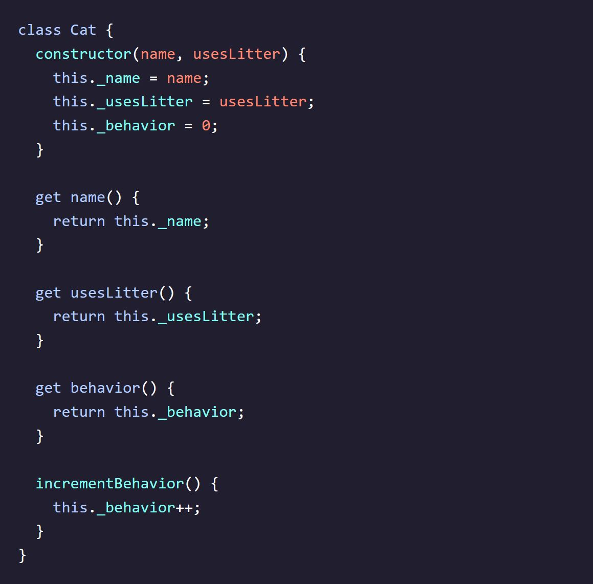
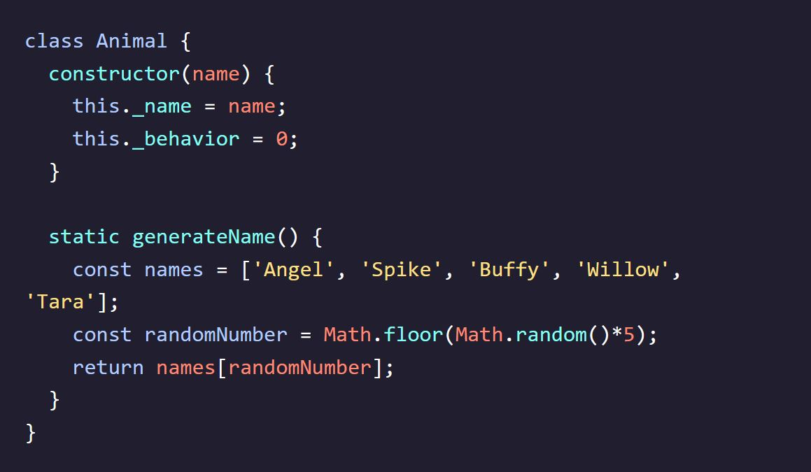

Codecademy - Learn Intermediate JavaScript
Notes taken while going through the Codecademy Learn Intermediate JS course
Classes
Introduction to Classes
- JavaScript is an object-oriented programming language that allows us to model real-world items using classes.
- Classes are a tool used by developers to create similar objects quickly.
- Objects have properties (keys) and behaviors (values) that define their characteristics and actions.
- Creating individual objects using object literals can be repetitive and time-consuming.
- Classes serve as templates for creating objects with shared properties and behaviors.
- Instead of manually creating objects with the same structure, we can define a class and use it to create new instances of objects.
- Classes help reduce duplicate code and simplify the process of creating and managing objects.
- Classes consist of properties (variables) and methods (functions) that define the characteristics and actions of objects created from the class.
- Classes can also have getter and setter methods to control access to the properties.
- By using classes, we can create objects with consistent structure and behavior, making our code more organized and maintainable.
Constructor
- The constructor method is a special method in a class that is called automatically when a new instance of the class is created.
- The constructor method is defined using the constructor() syntax inside the class.
- The constructor method is responsible for initializing the properties of the class.
- When a new instance of the class is created, the constructor method is invoked with the provided arguments.
- The this keyword refers to the instance of the class being created, allowing us to set the initial values of its properties.
- In the constructor method, we can assign values to the instance properties using the this keyword and the provided arguments or default values.
- The constructor method does not have a return statement, as it automatically returns the newly created instance of the class.
- The constructor method allows us to customize the initialization process for each instance of the class.
Instance
- An instance is an object that is created from a class and contains the properties and methods defined in the class.
- To create an instance of a class, we use the new keyword followed by the class name and any arguments required by the constructor method.
- The new keyword calls the constructor method of the class, initializes the instance with the provided values, and returns the newly created instance.
- The instance has access to the properties and methods defined in the class.
- Each instance has its own unique set of property values, allowing us to create multiple instances with different property values based on the same class.
- We can access the properties of an instance using dot notation, such as instanceName.propertyName.
- The values of the instance properties are specific to that particular instance.
Methods
- In a class, methods can be defined using the same syntax as object methods.
- We can define getter methods in a class using the get keyword followed by the method name, which allows us to access the value of a property.
- Getter methods are used to retrieve the value of a property and are accessed like a property rather than a method, without using parentheses.
- We can define regular methods in a class using the standard syntax without the get keyword.
- Regular methods can perform actions or modify the state of an object.
Method Calls
- To call methods and getters on an instance, use the instance name followed by a period and the method or getter name.
- When calling a method, include opening and closing parentheses after the method name.
Inheritance I
- The Cat class is created to represent cats in a kitty daycare, with properties like name, usesLitter, and behavior. 
- The Cat class shares some properties and a method with the previously created Dog class.
- Inheritance is a tool to reduce code duplication when multiple classes share properties or methods.
- The Animal class is introduced as a parent class that contains shared properties and methods for both Cat and Dog classes.
- The Animal class has properties like name and behavior, and a method called incrementBehavior().
- The Cat and Dog classes inherit the properties and methods from the Animal class.
Inheritance II
- The parent class is created to share common properties and methods with child classes.
- The parent class has a constructor that initializes shared properties.
- Getter methods are used to access the values of shared properties.
- Shared methods can be defined to perform common actions.
- The child class extends the parent class to inherit its properties and methods.
- The child class has its own constructor that initializes its unique properties and the inherited properties from the parent class.
- Getter methods can be defined to access the values of both the inherited and unique properties.
- The child class can override inherited methods with its own implementation if needed.
- Additional methods can be defined in the child class to perform specific actions.
- Inheritance allows for code reuse by creating a parent class and child classes that inherit its properties and methods.
- Child classes can extend the functionality of the parent class by adding their own properties and methods.
- Inherited properties and methods can be accessed and modified by child classes.
- Overriding methods in child classes allows for customized behavior while maintaining the shared structure.
- Inheritance promotes code organization, maintainability, and extensibility.
Inheritance III
- The Child class extends the Parent class using the extends keyword.
- The Child class has its own constructor that initializes its unique property and calls the parent class constructor using the super keyword.
- The Child class can introduce new properties.
- The extends keyword makes the parent class's methods available in the child class.
- The super keyword is used to call the constructor of the parent class.
- Calling super() is necessary before using the this keyword in the child class's constructor.
Inheritance IV
- When a class extends another class using the extends keyword, all of the parent class's methods become available to the child class.
- In the given example, the Cat class extends the Animal class.
- The Cat class inherits the name getter and behavior getter from the Animal class.
- The Cat class also inherits the incrementBehavior() method from the Animal class.
- The Cat class has access to the name property through the name getter.
- When creating an instance of the Cat class, such as bryceCat, it has access to the inherited methods and properties.
- Calling bryceCat.incrementBehavior() increases the value of the behavior property from 0 to 1.
- Accessing bryceCat.behavior logs the value 1 to the console, as it retrieves the value saved to the behavior property.
Inheritance V
- Child classes can have their own properties, getters, setters, and methods in addition to the inherited ones.
- In the example, the Cat class adds a usesLitter getter that returns the value of _usesLitter.
- By using inheritance, the Cat class is more concise and has reduced lines of code compared to the standalone Cat class without inheritance.
- Inheritance allows for easy modification of shared methods or properties by making changes in the parent class, instead of modifying each subclass individually.
- The benefits of inheritance, such as time saved, improved readability, and code efficiency, become more significant as the number and size of subclasses increase.
- Another example is shown with the Dog class, which extends the Animal class and has access to the same properties, getters, setters, and methods as the standalone Dog class but with reduced code size.
- Inheritance can be extended further to support other classes, such as Rabbit, Bird, Snake, or any other subclasses needed in the application.

Static Methods
- Static methods are methods that are directly available on the class itself, rather than on individual instances of the class.
- They can be called directly from the class, but not from an instance of the class.
- Static methods are defined using the static keyword before the method name.
- They are useful for creating utility methods or performing operations that are not specific to individual instances. 
- In the example, the Animal class has a static method called generateName() that returns a random name from a predefined list.
- To call a static method, you append the method name to the class itself, without creating an instance of the class.
- Static methods cannot be accessed from instances of the class or its subclasses.
- Attempting to call a static method on an instance will result in an error.
- Static methods are often used for helper functions, calculations, or generating values that are not tied to specific instances.
Review Classes
- Classes are templates for objects.
- Javascript calls a constructor method when we create a new instance of a class.
- Inheritance is when we create a parent class with properties and methods that we can extend to child classes.
- We use the extends keyword to create a subclass.
- The super keyword calls the constructor() of a parent class.
- Static methods are called on the class, but not on instances of the class.